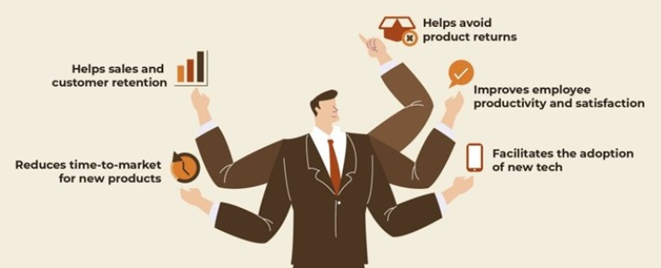

Most product companies today maintain product information in multiple locations, disparate formats, across different locations — in spreadsheets, PDF brochures, email interactions etc. — making its maintenance, update and modification complex. Therefore, a small error such as the wrong unit of measure, perhaps, or a zero gone missing, can have long-ranging business impact.
And you can prevent this. Easily. With a Product Information Management (PIM) system. In this blog post, part-one in a multi-part series on product information management, we'll address two fundamental questions: What is PIM and why do you need it.
What is product information management (PIM) system?
Imagine your company is launching a new product, a potential game-changer. Your team is coming together to make this a grand success. One of your teams is responsible for curating, storing, publishing and updating product-related information. One of them inadvertently makes a small mistake. PIM is the technology that serves as a central hub to collect, manage, and enrich your product information, create a product catalog, and distribute it to your offline sales and ecommerce channels. In one of the earlier magic quadrant report for PIM, Gartner defines PIM as follows.
PIM solutions are software products that:
- Support the global identification, linking and synchronization of product information across heterogeneous data sources through the semantic reconciliation of product master data.
- Create and manage a central database system of record.
- Enable the delivery of a single product view (for all stakeholders).
- Support data quality and compliance through monitoring and corrective-action techniques
Why does your business need PIM?
So that your product, marketing and sales teams can focus on creating compelling pitches for the product and engage customer, without having to worry about the sanctity of data across teams and channels. And then some!

1. PIM helps sales and customer retention
The tech-savvy consumers of today expect correct and complete product data at their fingertips. Even when they have conversations with salespeople in-store, they are comparing details online, before making a purchase decision. If what you're saying about your product is inaccurate or inadequate, you'll lose your customers' interest immediately. A PIM will help you structure and dispense your product information accurately.
2. It reduces time-to-market for new product
In a competitive global market, the first-mover advantage cannot be underestimated. A PIM allows you to get your wares to the market swiftly, by streamlining new product/collection marketing efforts. With a PIM, products can be quickly categorized and assigned attributes and formats, reducing the time required to get them up and selling.
3. It helps avoid product returns
Incomplete product information is one of the key reasons for product returns — customers expect something and receive something else, costing you not just money, but future business too. With a PIM, you can eliminate errors in your data, highlight missing information, and make across channels, in a consolidated way.
4. It improves employee productivity and satisfaction
Organizations are increasingly swamped with data, and employees can get overwhelmed trying to manage it. Manual update of the same information across systems can be tedious. More importantly, when one makes an error and that causes business loss, it can affect their self-confidence and morale. A PIM environment makes your employees interact with data only when necessary. In the time saved by not having to manual input data, they can focus on delighting your customer.
5. It facilitates the adoption of new tech
Businesses, today, are in the midst of a technological renaissance. One the one hand, there are business-focused tech like machine learning, artificial intelligence and automation. On the other, customer experiences are being disrupted by AR, VR, AI, customization, etc. A common requirement across all this new tech is good, structured data — lots of it. With a PIM tool to centralize and organize your data, your enterprise can reap the benefits of these advancements.